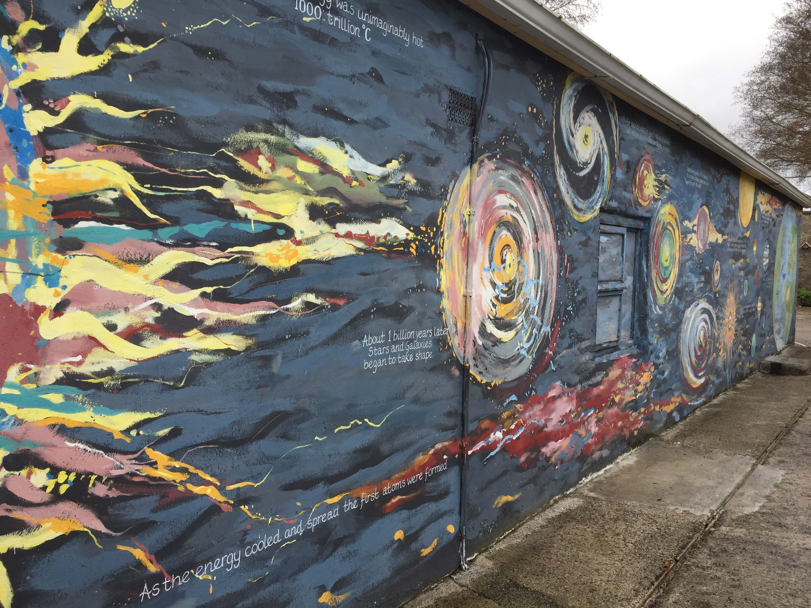

Please come and visit the mural at An Gáirdín Organic Garden & Ecology Centre. Recently at An Gáirdín we had a delightful ceremony for the unveiling of a mural of The Story of the Universe. This beautiful mural, painted by local artist Izabela Campbell, covers the 14mt back wall of the old cowsheds and barns. For years we had been wondering how we might depict The Story of the Universe in the garden and we are so delighted that Izabela came along and surpassed our imaginations and expectations.
We humans are story-tellers. We live by story and we live out of story. Every society in every corner of the planet from the dawn of human consciousness has grappled with the questions of the meaning of life, of death, how we ought to behave, how and when it all began and where we are heading for. Ancient societies created stories and myths, referred to as Origin or Creation Stories, encapsulating their beliefs of the ultimate meaning of everything. Every society came up with its own origin or creation Story. In the Western world our origin story is the Biblical Jewish Christian story. In the Eastern world the Hindu and Buddhist story is dominant. We find other beautiful origin/creation stories in the indigenous societies.
In recent times science has revealed a lot of new insights about the Universe and Planet Earth. We understand more about the beginning and evolution of the Universe than the peoples of long ago. We could say that we have a new Creation Story – the Story of the Universe - how it began and evolved over 13½ billion years. One of the most exciting revelations of this story is the fact that it is everybody’s story, regardless of what part of Planet Earth one inhabits. It is equally the story of all life, animals, insects, birds, the land, the mountains, the air, the water, everything that exists. It reveals to us that there is just One Community of Life. Science has confirmed what many people and indigenous societies have always intuited –all is One and all is interdependent.
This New Story, ‘new ‘relatively speaking, gives us a new understanding of ourselves as a human species and a new understanding of our relationship with all other species. When we own this story and allow it to seep in we move to a new level of consciousness. This is seen as the biggest transformation humans have ever experienced. It is radical because it is about changing our understanding of who we are in the context of Earth and this Universe as we know it now. It is a necessary transformation if we and many other species are to survive into the future.
Our wish is that the mural will be an inspiration and a help in bringing about this new consciousness. We invite people to come, and to walk this amazing 13½ billion year journey, step by step from the beginning at the Big Bang to the emergence of the human species.

Copyright © 2023 All content copyright An Gáirdín